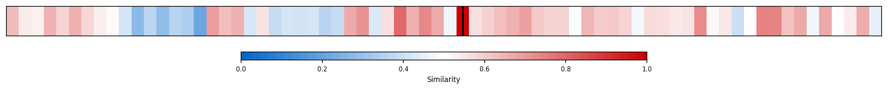
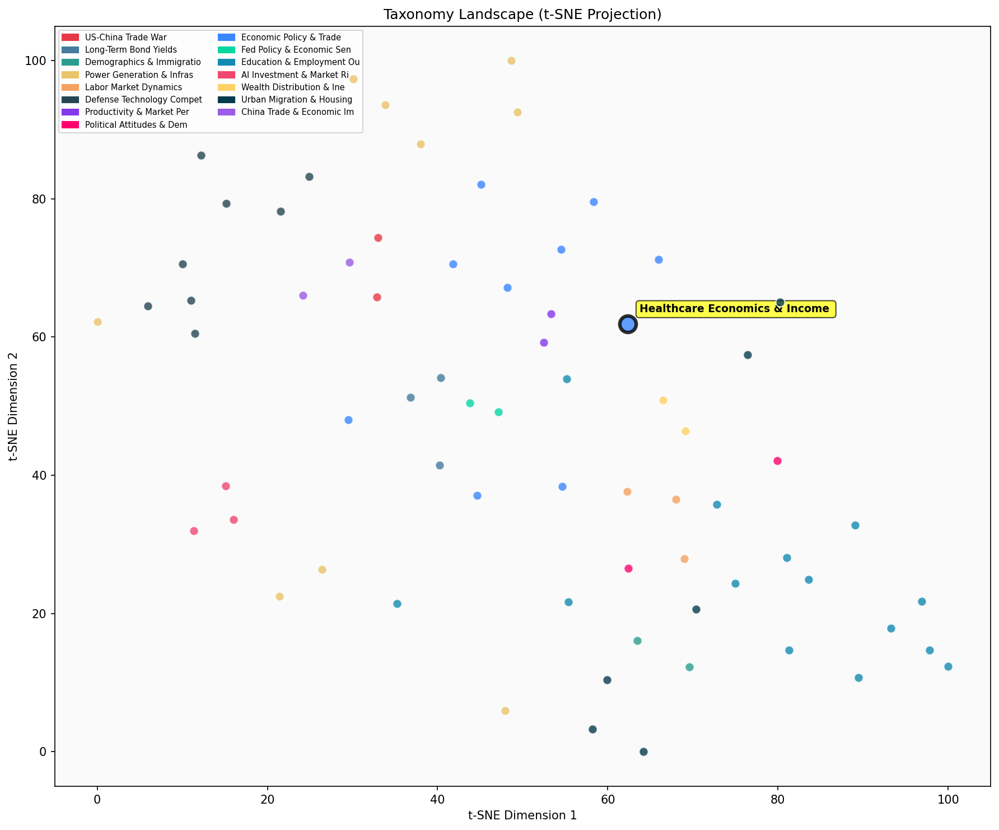

Description
This subcluster examines the intersection of healthcare systems, pharmaceutical economics, and income distribution patterns. Articles analyze tax policy impacts on pharmaceutical companies, Medicare financing sustainability, and cross-national comparisons of health spending relative to income inequality. Common sources include Bureau of Economic Analysis data, OECD healthcare statistics, and academic research on earnings variability. The analysis spans corporate tax loopholes, drug pricing policies, and healthcare system performance metrics. Unlike sibling subclusters focused on broader economic performance or climate policy, this grouping specifically targets health sector economics and distributional outcomes, featuring both quantitative policy analysis and international comparative studies of healthcare accessibility and financing mechanisms.
Similarity to All 70 Subclusters
Each cell represents a subcluster. Color intensity shows similarity (blue=low, red=high). Black line marks current subcluster position.
Relationship to Primary Clusters
Average similarity to each of the 15 primary clusters. Larger area = stronger relationship to that cluster.
Taxonomy Landscape
All 70 subclusters positioned by similarity (t-SNE). Current subcluster highlighted with label. Click to enlarge.
Network Connections
Current subcluster at center, connected to related subclusters. Line thickness = similarity strength.
Most Representative Articles
-
1. Income inequality significantly impacts health expenditures, with disparities in mean household disp
-
2. Data shows countries with higher real disposable income per capita spend more on healthcare, yet thi
-
3. The U.S. redistributes a larger fraction of national income to the bottom 50% than European countrie
-
4. US individuals with Nordic ancestry earn 30% more than average Americans and 50% more than their Nor
-
5. Data shows countries with similar GDP per capita can have vastly different health spending levels. R
Edge Cases (Boundary Articles)
-
1. Britain’s National Health Service is under increasing stress, with 6.8mm people on its waiting listsThis article is borderline because while it discusses healthcare system challenges (waiting lists, doctor shortages), it focuses on operational capacity and resource allocation rather than the cluster's core themes of healthcare economics, pharmaceutical economics, or income distribution analysis. The article presents descriptive statistics about NHS performance without analyzing economic mechanisms, tax policies, or how healthcare access varies across income levels.
-
2. The penetration of broadband subscriptions in the UK varies significantly by speed, with only 8% ofThis article is borderline for the "Healthcare Economics & Income Distribution Analysis" cluster because it focuses on broadband infrastructure and digital connectivity rather than healthcare systems, pharmaceutical economics, or income distribution patterns. While broadband access could indirectly relate to healthcare delivery (like telemedicine) or economic inequality, the article's primary focus on telecommunications infrastructure makes it a poor fit for a cluster centered on healthcare economics and would be better suited for the "Productivity Growth & Innovation Dynamics" cluster which likely covers technology and infrastructure development.
-
3. Healthcare capital intensity plays a crucial role in policy analysis, influencing productivity measuThis article is borderline because while it mentions healthcare and economic analysis, it focuses primarily on capital intensity, productivity measures, and rates of return rather than the subcluster's core themes of income distribution patterns, tax policy impacts, or Medicare financing. The article's emphasis on capital data and strategic decision-making aligns more closely with general productivity and innovation analysis than with the specific healthcare economics and distributional concerns that define this subcluster.
Original Dendrogram